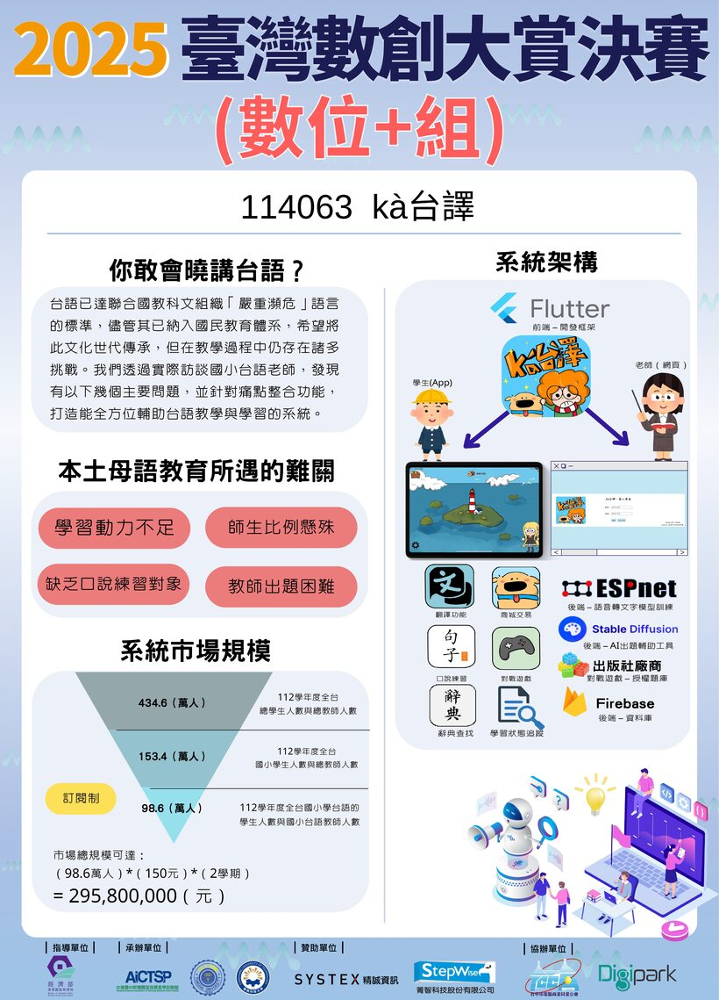
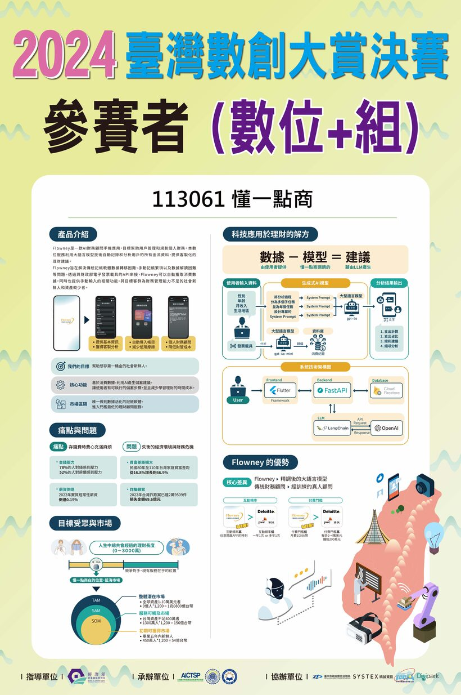
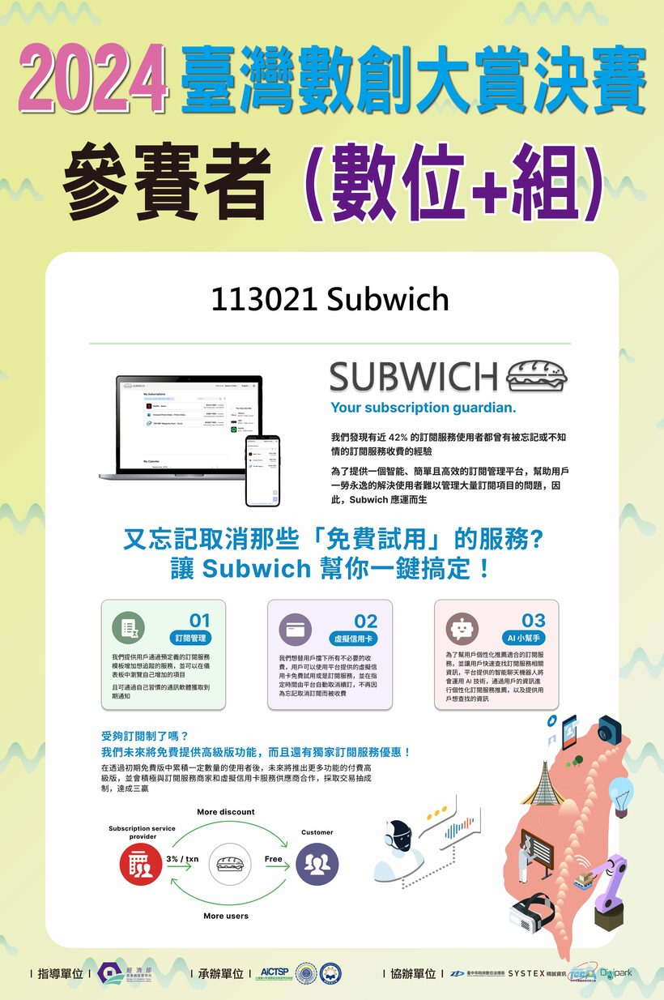
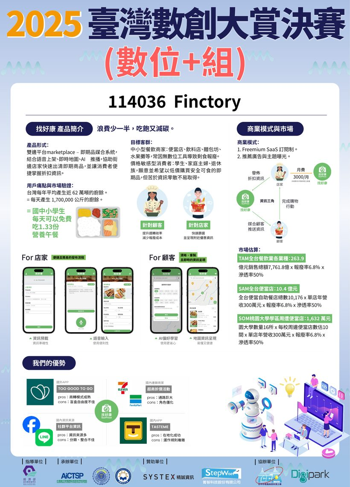
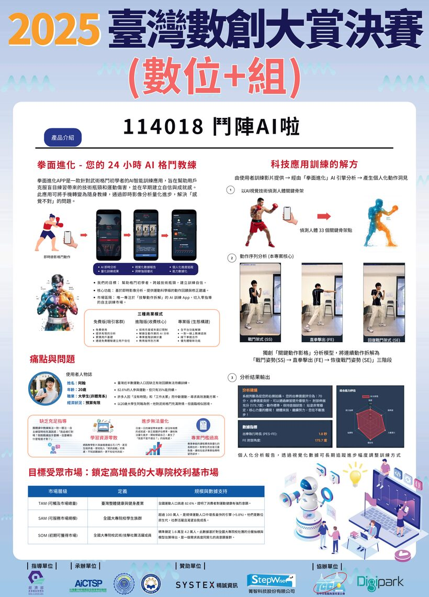
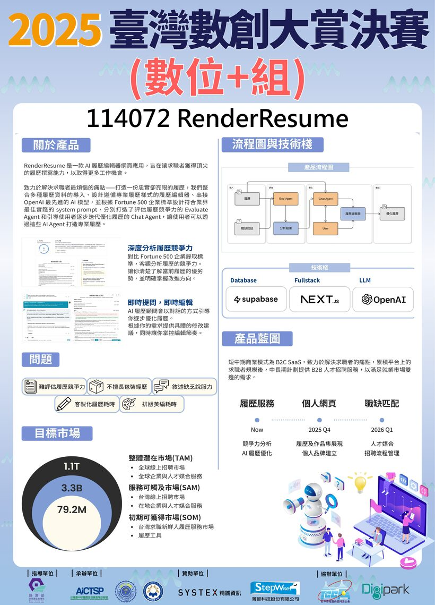

這份簡報整理自 2024、2025 兩屆共 31 件得獎海報，給第一次開會用。目標是先把組別和大方向定下來，主題與細節留到討論時補。
數位+組：App、網站、動畫、影片、遊戲，評審看重商業論述。
智慧+組：AI、物聯網、大數據，評審看重能運作的系統和量化指標。
創新創意性 40%、市場價值 30%、技術成熟度 30%。創新是單項最大的一塊，選題的新意比技術難度更影響分數。
2 名各 5 萬，由精誠資訊、雄欣科技各自依自家標準遴選。報哪一組都有資格被選上。精誠另有人才庫實習與面試的媒合。
需 1–2 位指導老師，一隊只能報一個主題。所有繳件匿名，不得出現校名、系所、教授姓名或企業名。
讀完 31 件海報後，金銀獎和佳作之間最穩定的差別，是商業模式講不講得清、市場有沒有量化，而不是技術做得多深。
2024 銅獎「時尚循環」自己訓練了擴散模型，是當年技術最重的作品，但海報沒寫商業模式，停在銅獎。同年金獎「懂一點商」技術普通，市場論述完整。
金、銀、銅幾乎都附了明確的收費方式和市場規模估算。多數佳作的海報只有產品插畫，沒有商業模式，也沒有市場數字。
不少得獎作只是串接現成工具（OpenAI API、現成濾鏡、3D 工具），但海報都有可展示的畫面。純文字概念稿大多停在佳作。
以下是數位+組的得獎海報，可以看到訂閱定價、交易抽成或市場規模估算。這部分正好是商科同學能著力的地方。






原始海報全檔在 歷屆得獎作品/（2024、2025 共 31 件）。完整計畫書是官方密件，不對外公開。
| 數位+組 | 智慧+組 | |
|---|---|---|
| 拿金銀靠什麼 | 商業論述加上輕量原型 | 能運作的系統，加上量化指標或產學實場域 |
| 技術門檻 | 較低，串接現成工具即可 | 較高，多半要訓模型、做硬體或實測 |
| 跟我們的組成 | 相符 | 佳作可行，金銀需要較多實作時間 |
我們是 4 位商科加 2 位資工，不打算花太多時間實作。數位+組的勝負點落在商業論述，跟這個組成比較合。
前一版想到的「企業 RAG 助手」其實不適合。創新佔初賽 40%，而 RAG 助手到處都有，精誠自己就在賣，做一個學生版給他們看反而吃虧。歷屆金獎（台語學習、新鮮人理財、水下考古 XR）技術都不難，贏在題目選得準。
方向是找一個夠窄、夠痛、目前沒人好好做的問題或對象，技術用現成的包起來就好。
移工與新住民、視障、偏鄉學生、台中在地小產業等。對象越具體，創新分越好拿，社會價值也好講。
不是泛談碳盤查，而是某個產業的某個動作。同時搭上政策風向和兩家贊助商的相鄰領域。
重點在別人沒想到去用的一份資料，技術反而簡單。新意來自切入點。
把最強的方向落成三個具體題目，照標準評。推薦第一個，它接近去年金獎「kà台譯」的路線：被忽略的語言或文化族群，加上 AI 和社會價值。
| 題目 | 好理解 | 創新 | 市場 | 做得到 | 看頭 |
|---|---|---|---|---|---|
| 移工／新住民 多語生活＋求職助手 | 高 | 高 | 高 | 高 | 高 |
| 高齡者 AI 防詐／求助助手 | 高 | 中 | 高 | 高 | 高 |
| 偏鄉學童 AI 學習陪伴 | 高 | 中 | 中 | 高 | 中 |
初賽前不用主講。每人顧一條研究線，交付的是條列重點加連結，不是完整文章。整理好丟給 AI 生計畫書初稿，再一起審稿。
| 研究線 | 負責 | 交付（餵 AI 用） |
|---|---|---|
| 痛點與目標對象 | 商科 | 族群多痛、真實案例、佐證數據與來源連結 |
| 市場與競品 | 商科 | 市場規模數字、競品清單、它們的缺口 |
| 商業模式 | 商科 | 收誰的錢、定價、獲利路徑、類似案例 |
| 政策與社會價值 | 商科 | 對應哪個政策或 SDG、佐證報導連結 |
| 技術與 Demo | 資工 | 用哪些現成 API 或模型、一個能截圖的 Demo 加一個數字 |
隊長是報名和聯絡的行政角色，評分表沒有這項，評審不看，初賽前先不用急著定。決賽要上台簡報和答 Q&A（佔決賽 20%），到時候再從成員裡挑口條最穩的當主講即可。
重點不是寫得漂亮，而是每個說法都有具體數字，並附一條能讓 AI 讀到完整內容的連結。條列就好。下面是一條研究線填好的樣子。
「很多移工在台灣生活有困難，需要協助。」沒有數字、沒有來源，AI 只能憑空發揮。
「在台移工約 75 萬人（勞動部 2025，連結），主要困難是看不懂法規文件（報導連結）。」有數字、有來源，AI 寫得準也查得到。
幾個原則：給數字而不是形容詞；每個重點配一條來源連結（原始報告或新聞頁面，讓 AI 讀完整內容）；標清楚哪些是查到的事實、哪些是我們的假設。
最近的死線是 7/22。要先確定指導老師，並收齊全員的切結書簽名。
走諧音和仿成語路線，扣著比賽名「數創」和拿獎。團名是公開展示的，不受匿名規定限制，只要別暴露自己學校就好。
成語本意是名列前茅，又含「數」，好記有氣勢。
仿「勝券在握」，勝算就在數據裡。
仿「戰無不勝」，呼應數創的「創」。
仿「點石成金」，把資料變成獎金。
仿「天選之人」，比賽在臺中，走搞笑路線。
主辦是東海大學，借現成神話人物雙關。
保佳作、衝銀，還是試企業特別獎？大家能投入的時間到哪裡？
確認報數位+組，或提出不同意見
每人帶 1 到 2 個點子，用三個門檻篩，當場選一個
商業計畫（AI 生成）、輕量原型截圖（資工）、海報
行政隊長、內容組、原型組，順便定決賽主講
列可能人選，分派誰去問
倒推 7/22，先處理指導老師和切結書簽名